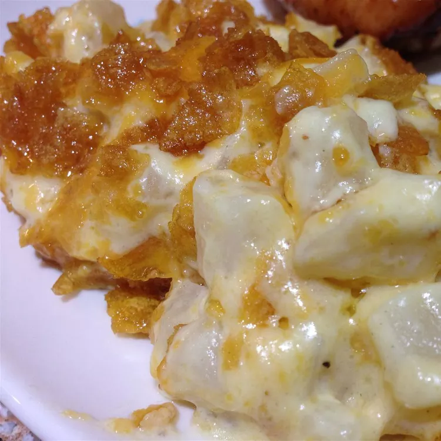

Chessy Potato

Description
This easy to make casserole is packed with potatoes and Cheddar cheese.
It's a perfect side dish for any Thanksgiving table.
Ingredients
- 1 pound frozen Southern-style hash brown potatoes
- 1 (10.75 ounce) can condensed cream of potato soup
- 1 (16 ounce) container sour cream
- 1 (16 ounce) package shredded Cheddar cheese
- ½ cup butter, melted
- 1 cup crushed potato chips
Steps
- Preheat the oven to 350 degrees F (175 degrees C).
- Mix potatoes, condensed soup, and sour cream together in a large baking dish; mix in cheese, butter, salt, and pepper to taste. Top mixture with potato chips.
- Bake in the preheated oven until the mixture is bubbly and lightly brown, about 1 hour.
- Remove from oven and let stand 15 minutes before serving.